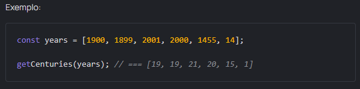

A century
Intro
Bem-vindo(a) ao Centro Analítico Mate. Realizamos pesquisas estatísticas e análise de dados. Nesta e nas tarefas seguintes, precisamos da sua ajuda para escrever programas
Tarefa:
Crie uma função getСenturies, que leva um array de anos years, e retorna uma série de séculos. Recomendamos usar o método map.
